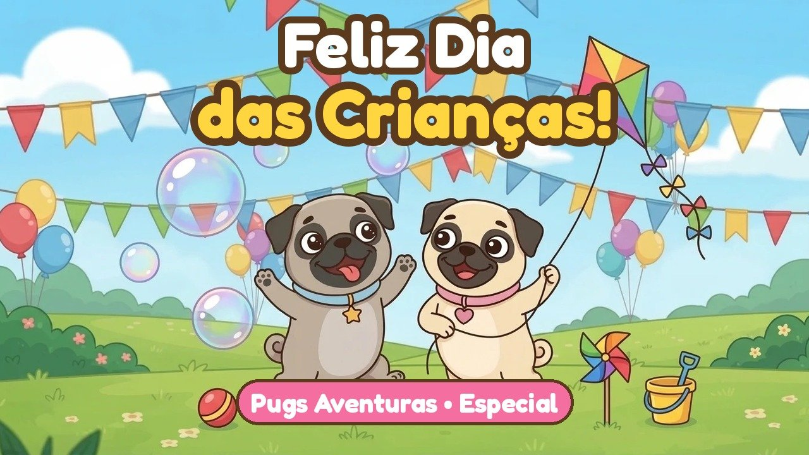

Em breve 🐾
Em breve 🐾
Dia das Crianças 2026
12 de outubro
A Joy e a Jane brincam, cantam "Feliz Dia das Crianças" e chamam os amiguinhos para a festa.
Pugs Aventuras
Em cada data especial a Joy e a Jane aparecem juntinhas, com uma música feita só para o dia.
Em breve 🐾
12 de outubro
A Joy e a Jane brincam, cantam "Feliz Dia das Crianças" e chamam os amiguinhos para a festa.
A Joy e a Jane estão preparando uma surpresa para o fim do ano.
Em breve
Vídeo da Joy e da Jane com o nome do seu filho escrito no cartão. Para quem é do Clube.
Saber mais